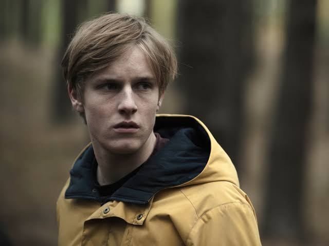
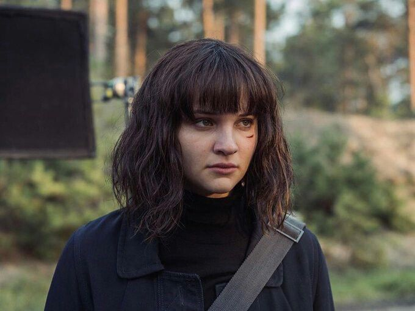
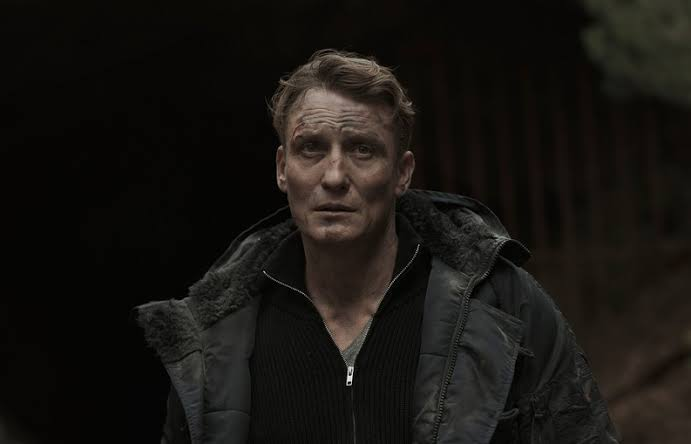
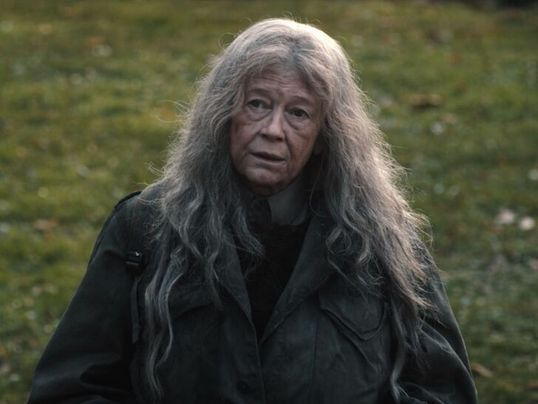

Jonas Kahnwald
Joven atormentado por el misterioso suicidio de su padre Michael. Al investigar en las profundidades de las cuevas de Winden, se convierte en el viajero central que busca deshacer el nudo temporal.
Mi serie favorita
UN THRILLER DE CIENCIA FICCIÓN
Ambientada en la pequeña y ficticia ciudad alemana de Winden, la historia arranca con la misteriosa desaparición de dos niños en las inmediaciones de los densos bosques y de una planta de energía nuclear.
A medida que los secretos familiares salen a la luz, los habitantes descubren una conspiración y una red de conexiones temporales entrelazadas a lo largo de cuatro generaciones, donde la pregunta crucial no es en qué lugar están, sino en qué época.

Joven atormentado por el misterioso suicidio de su padre Michael. Al investigar en las profundidades de las cuevas de Winden, se convierte en el viajero central que busca deshacer el nudo temporal.

Compañera de Jonas y hermana de Mikkel Nielsen. Su destino está entrelazado de forma inseparable con el de Jonas a través de diferentes realidades y bucles temporales.

Inspector de policía que carga con el trauma de la desaparición de su hermano Mads en 1986, y que revive la pesadilla cuando su propio hijo desaparece en 2019.

Directora de la planta nuclear de Winden en 1986. Conocida como "El Demonio Blanco", es una de las viajeras temporales más estratégicas e implacables en la pugna por romper el ciclo infinito.